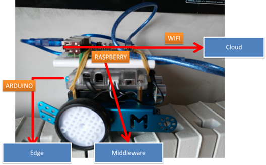
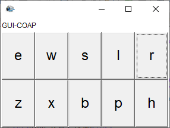

Mbot2020 | The reference ddr robot
Hardware
-
The robot
MBOT (wifi) base
https://www.robotstore.it/Makeblock-mBot-S-Explorer-Kit

MBOT as an IOT device
https://en.wikipedia.org/wiki/Internet_of_things

- Raspberry PI 3 Model B+ (42,85)
Wires male-male / male-female / female-female
Distance Sensor Sonar HC-SR04
- Batteria EasyAcc Colorato 10000mAh (19,99)
Edge : the Arduino layer
uniboControl.ino (baudrateThe Robot is able to execute a set of movement-commands:
-
w : forward -
s : backward -
a : rotate left -
d : rotate right -
r : rotate left 90 degrees -
l : rotate right 90 degrees -
x : rotate left 10 degrees -
l : rotate right 10 degrees -
h : stop the robot movement
Arduino connected a RaspberryPi (i.e. on Linux)
A Python program that allows us to send commands to Arduino using the serial line: testSerial.pysudo apt-get install python3-serial //just once ...A NodeJs program that allows us to send commands to Arduino using the serial line: testSerial.js
npm install serialport //just once ... node testSerial
A robot-usage utility
The Kotlin object mbotSupport.kt provides an utility that allows application designers to send commands the robot actuators without knowing any detail of their low-level configuration.Moreover, this utility creates (if required) a data-source (the actor robotDataSourceArduino.kt) that works as a event stream source with respect to the data generated by the robot sonar on Arduino.
Since a sonar usually emits data with a quite high frequency and since these data are sometimes not reliable, the application designer could conveniently create a pipe including a data-cleaner and some filter.

- dataCleaner.kt: eliminates data outside a prefixed interval of values
- distanceFilter.kt: emits an
obstacle : obstacle( D )
High-level demo
|  |
An utility to send commands is defined in the project
|